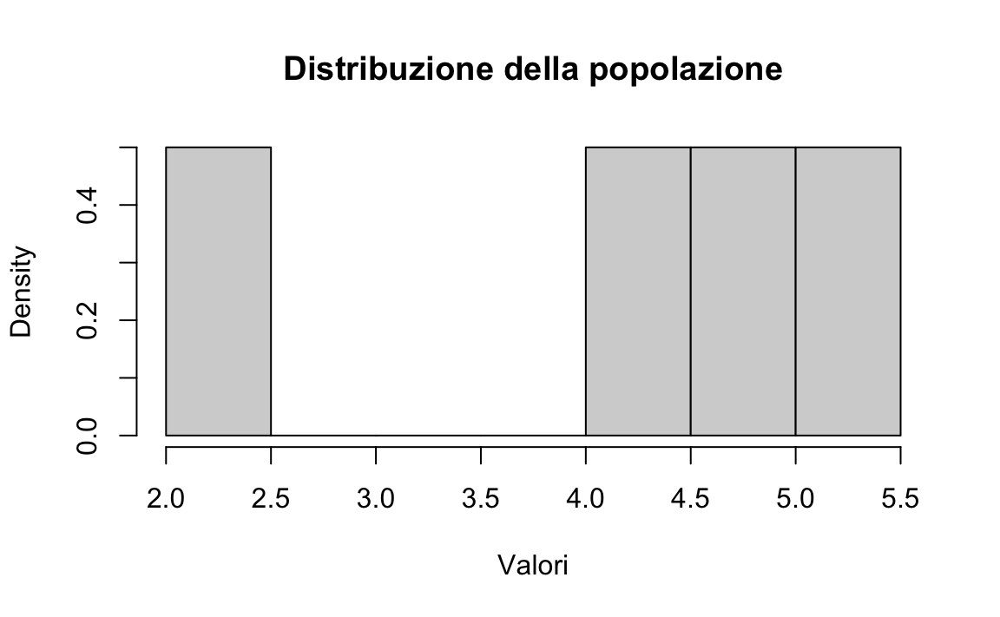
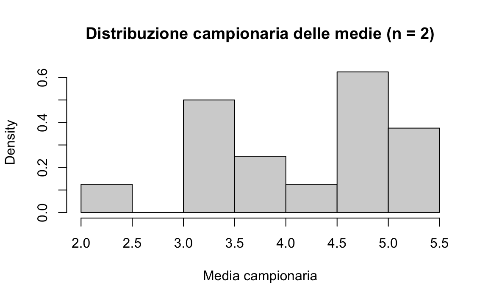
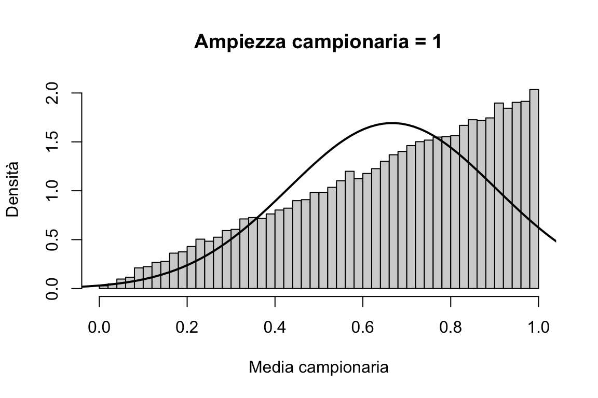
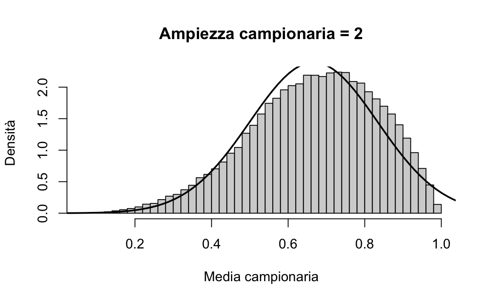
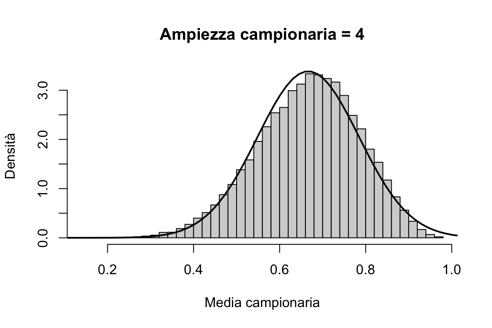
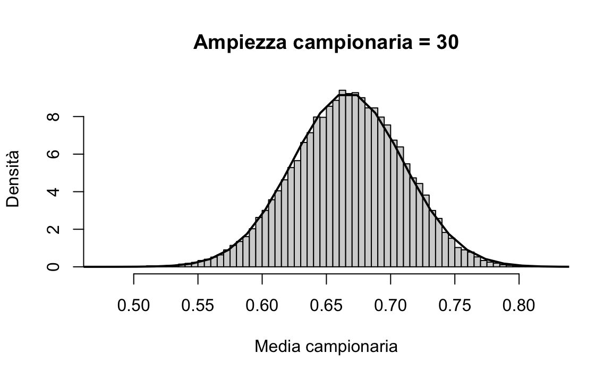
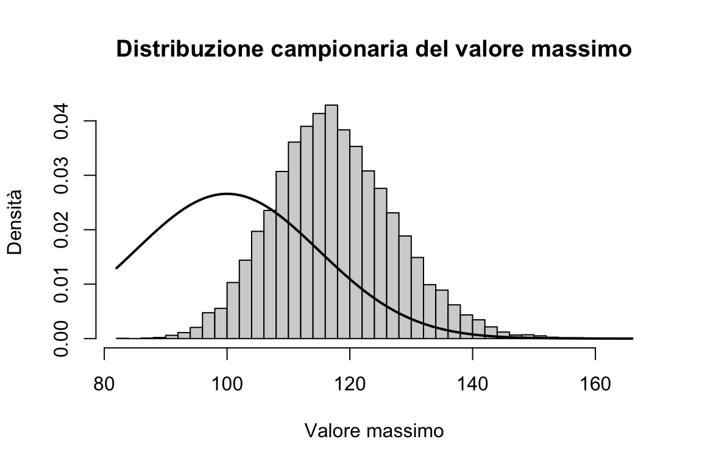
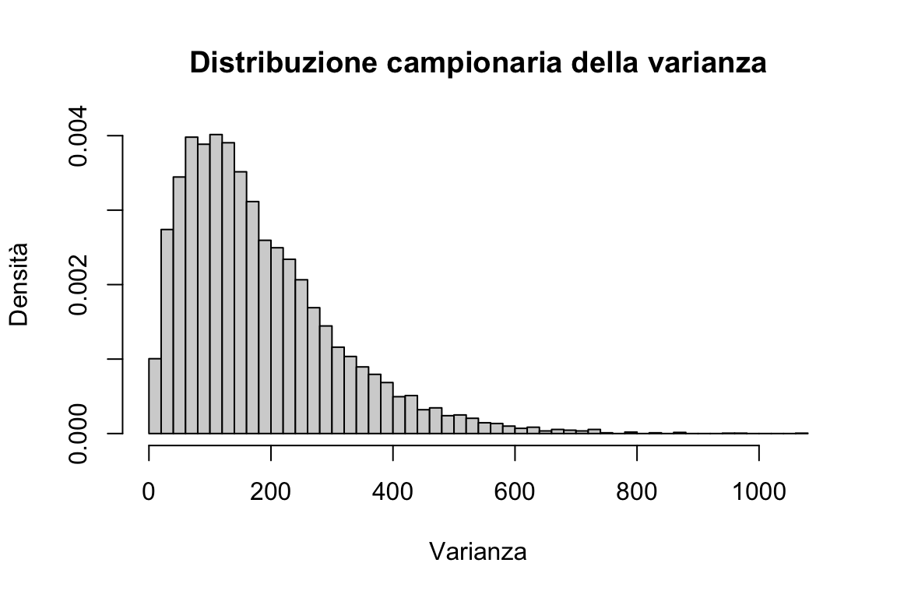
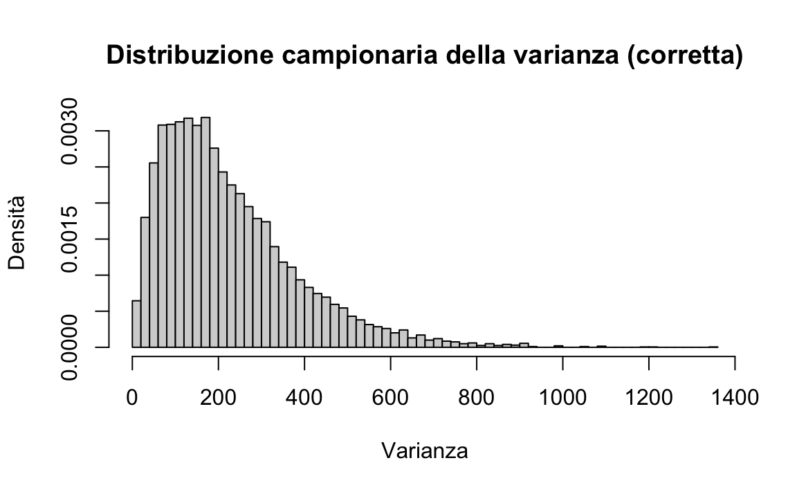

here::here("code", "_common.R") |>
source()
# Load packages
if (!requireNamespace("pacman")) install.packages("pacman")
pacman::p_load(mice)61 Introduzione all’inferenza frequentista
Prerequisiti
Concetti e Competenze Chiave
- Comprendere il background storico da cui si è sviluppato l’approccio frequentista.
- Comprendere il concetto di distribuzione campionaria.
- Familiarizzare con le proprietà della distribuzione campionaria della media dei campioni.
- Comprendere il teorema del limite centrale.
- Acquisire conoscenze sulle proprietà della distribuzione campionaria della varianza.
Preparazione del Notebook
61.1 Introduzione
Ci sono due approcci principali per l’inferenza statistica: la statistica frequentista e la statistica bayesiana. Questi metodi consentono di fare conclusioni sulla popolazione di interesse attraverso l’analisi dei dati. Entrambi gli approcci sono usati per stimare quantità sconosciute, fare previsioni e testare ipotesi, ma differiscono nella loro interpretazione della probabilità e in come integrano le conoscenze precedenti ed evidenze.
Nella statistica frequentista, la probabilità viene interpretata come la frequenza relativa a lungo termine di un evento in un numero infinito di prove. Questo approccio si basa sull’idea che il vero valore di un parametro della popolazione sia fisso, ma sconosciuto e debba essere stimato dai dati. In questo contesto, le inferenze statistiche vengono ottenute a partire dai dati osservati, mediante l’utilizzo di tecniche come la stima puntuale, gli intervalli di confidenza e il test di ipotesi, e facendo alcune assunzioni riguardo al processo sottostante che genera i dati.
D’altra parte, la statistica bayesiana interpreta la probabilità come una misura di convinzione o grado di certezza riguardo a un evento (Jaynes, 2003). Questo approccio consente di incorporare conoscenze pregresse ed evidenze nell’analisi statistica attraverso l’uso del teorema di Bayes. In questo contesto, il vero valore di un parametro della popolazione è trattato come una variabile casuale e viene continuamente aggiornato man mano che vengono raccolti nuovi dati. Ciò porta alla formazione di una distribuzione completa nello spazio dei parametri, nota come distribuzione a posteriori, che può essere utilizzata per fare previsioni probabilistiche e quantificare l’incertezza associata.
In questo capitolo, approfondiremo il concetto di distribuzione campionaria che costituisce uno dei pilastri dell’inferenza statistica frequentista. La distribuzione campionaria ci permette di comprendere come le stime dei parametri della popolazione, come la media o la varianza, cambiano da campione a campione. In particolare, la distribuzione campionaria ci consente di stabilire delle proprietà probabilistiche delle stime campionarie, come ad esempio la loro media e la loro varianza. Queste proprietà sono utili per costruire gli intervalli di fiducia e i test di ipotesi che costituiscono gli strumenti principali dell’inferenza statistica frequentista.
61.2 I Frequentisti sono Razzisti?
Nel ?sec-bayes_theorem, abbiamo esaminato le origini storiche e il contesto culturale che ha contribuito all’interpretazione applicativa del teorema di Bayes fornita da Richard Price. Queste origini sono legate alle idee alla base della rivoluzione americana, rappresentando quello che potremmo definire il “lato luminoso” del liberalismo moderno.
Le origini culturali dell’approccio frequentista, invece, sono diametralmente opposte e strettamente connesse a quella che potremmo chiamare la “parte oscura” della modernità. Si potrebbe dire che l’avversione per la soggettività abbia guidato l’ascesa del frequentismo.
Francis Galton (1822-1911) fu un uomo straordinario sotto molti aspetti. Cugino di Charles Darwin e medico qualificato, ereditò una fortuna che gli permise di dedicarsi liberamente ai suoi interessi. Esplorò l’Africa, ricevendo una medaglia dalla Royal Geographical Society, e diede un importante contributo alla meteorologia, notando per primo il fenomeno degli “anticicloni”. Tuttavia, il suo contributo più significativo riguardò l’uso della statistica nello studio degli esseri umani, in particolare nell’analisi della trasmissione ereditaria del talento.
Galton trascorse gran parte della sua carriera all’University College di Londra, dove fece numerose scoperte. Tra queste, un importante contributo riguardava la distribuzione normale. Fu anche il primo a spiegare il concetto che oggi conosciamo come “regressione verso la media”, da lui chiamato “regressione verso la mediocrità”.
Il suo interesse per l’ereditarietà del talento portò Francis Galton a scrivere il libro Hereditary Genius, in cui analizzava come individui brillanti tendessero a concentrarsi in specifiche famiglie. Fu lui a coniare l’espressione “nature and nurture” per riferirsi ai due fattori fondamentali che influenzano lo sviluppo umano: l’ereditarietà (ciò che oggi chiamiamo genetica) e l’ambiente.
Tuttavia, Galton non si limitò a osservare e documentare la distribuzione dell’intelligenza. Il suo obiettivo era ambizioso e controverso: creare una scienza per il “miglioramento della specie umana”, che egli chiamò “eugenetica”. Promuoveva l’idea di incoraggiare la riproduzione tra le famiglie considerate di maggior successo e, al contrario, di scoraggiarla tra quelle ritenute meno fortunate.
Va però sottolineato che Galton abbracciava idee profondamente razziste. In una lettera pubblicata sul Times di Londra, descrisse gli africani come “inferiori” e li definì “selvaggi pigri e chiacchieroni”. Gli arabi, secondo lui, erano “poco più che consumatori della produzione altrui”. Proponeva inoltre di consegnare l’Africa orientale ai cinesi, che giudicava “inclini alla menzogna e alla servilità” ma anche, a suo dire, “naturalmente industriosi e amanti dell’ordine”. Per Galton, gli anglosassoni rappresentavano la razza migliore esistente, sebbene ritenesse che gli antichi ateniesi fossero stati il vertice dell’umanità.
Il lavoro di Galton ispirò una generazione successiva di statistici, in particolare Karl Pearson (1857-1936) e Ronald Fisher (1890-1962). Come Galton, Fisher e Pearson erano brillanti, ma condividevano anche le sue idee razziste, considerate inaccettabili sia per gli standard attuali che per quelli del loro tempo.
Karl Pearson, poliedrico studioso e innovatore, divenne professore di matematica applicata all’UCL nel 1885, seguendo le orme di Francis Galton. Dopo la morte di quest’ultimo, ereditò la cattedra di eugenetica, istituita e finanziata da Galton stesso. Pearson fondò la rivista di statistica Biometrika e diede un contributo fondamentale alla disciplina, sviluppando il test del chi quadrato e coniando il termine “deviazione standard”.
Ronald Fisher, più giovane, succedette a Pearson come professore di eugenetica presso l’UCL. Considerato un gigante della teoria statistica, Fisher contribuì in modo decisivo allo sviluppo della disciplina, inventando o perfezionando strumenti fondamentali come l’analisi della varianza (ANOVA), il concetto di “significatività statistica” e il metodo della massima verosimiglianza (MLE).
Tutti questi ricercatori cercarono di allontanare la statistica dall’approccio soggettivo di Laplace e Bayes. Come Galton, sia Pearson che Fisher erano convinti sostenitori dell’eugenetica.
È interessante riflettere su quanto le idee di Galton, Pearson e Fisher sull’eugenetica possano aver influenzato le loro visioni scientifiche. Secondo alcuni studiosi, la storia della statistica e quella dell’eugenetica sono strettamente intrecciate. Fisher, e in misura minore Pearson, rigettavano il bayesianesimo perché desideravano conferire un fondamento apparentemente “oggettivo” alle loro idee eugenetiche. Se fosse stata la scienza a “dimostrare” che alcune razze erano inferiori ad altre, o che la riproduzione tra i poveri dovesse essere scoraggiata, queste teorie sarebbero state presentate come indiscutibili. Il bayesianesimo, con la sua componente intrinseca di soggettività, rappresentava una minaccia a questa pretesa di oggettività.
Quanto dovremmo considerare le implicazioni storiche ed etiche quando valutiamo la statistica frequentista? Chivers (2024) risponde così: è indubbio che una parte dell’ideologia razziale nazista possa essere ricondotta a Galton senza troppe difficoltà. Tuttavia, questa riflessione, per quanto cruciale dal punto di vista storico ed etico, non è direttamente rilevante in ambito strettamente statistico. La domanda fondamentale rimane: “Quale approccio è corretto?” o, meglio ancora, “Quale approccio è più utile?”, anziché chiedersi “Quale approccio ha avuto i sostenitori più discutibili?”.
Pur riconoscendo il valore di questa risposta in termini di focalizzazione sulla metodologia, ritengo che sia intrinsecamente inadeguata. Consideriamo uno scenario ipotetico: supponiamo che in una “torre d’avorio” – che sia la statistica, l’accademia o la scienza in generale – la teoria A risulti più efficace della teoria B. Tuttavia, al di fuori di questo contesto isolato, la teoria A comporta conseguenze etiche inaccettabili, mentre la teoria B no. Dovremmo davvero accettare A semplicemente perché funziona meglio in un sistema chiuso e teorico? La mia risposta è un categorico no.
Le cosiddette “torri d’avorio” sono costruzioni ideologiche che non rispecchiano la realtà. Non esiste una netta separazione tra “dentro” e “fuori”: scienza ed etica non operano in compartimenti stagni, ma interagiscono costantemente. L’idea di giudicare una teoria esclusivamente sulla base della sua efficacia all’interno di un contesto limitato ignora le sue implicazioni più ampie e potenzialmente dannose.
Nel caso specifico del frequentismo, è evidente – come dimostreremo in seguito – che questo approccio non solo presenta implicazioni etiche problematiche, ma è anche intrinsecamente fallace dal punto di vista metodologico. La sua supposta efficacia in un ambito ristretto è un’illusione che non regge a un’analisi critica più ampia. Non possiamo, né dobbiamo, separare l’efficacia teorica dalle conseguenze pratiche ed etiche. Il frequentismo fallisce su entrambi i fronti: morale e scientifico. Difenderlo, quindi, risulta insostenibile in ogni contesto.
61.3 Stime, stimatori e parametri
Spostiamo ora il discorso da un piano culturale ad un piano strettamente statistico. Consideriamo il concetto di stima statistica.
Quando si analizzano i dati, solitamente si è interessati a una quantità a livello di popolazione; tuttavia, di solito si ha accesso solo a un campione di osservazioni. La quantità sconosciuta di nostro interesse viene chiamata parametro. La statistica che calcoliamo utilizzando i dati del campione viene chiamata stima, e la formula che la produce viene chiamata stimatore. Formalmente, uno stimatore è una funzione dei dati osservati utilizzata per produrre una stima di un parametro.
In altre parole, quando analizziamo un campione di dati, vogliamo inferire alcune proprietà della popolazione di cui il campione è rappresentativo. Il parametro rappresenta la misura di tali proprietà, ma spesso non è possibile calcolarlo direttamente sulla popolazione. Pertanto, lo stimiamo utilizzando le osservazioni del campione. La stima è quindi l’approssimazione del valore del parametro che otteniamo dal nostro campione, mentre lo stimatore è la formula matematica utilizzata per calcolare questa stima.
Tuttavia, le stime non sono necessariamente identiche ai parametri di nostro interesse. Le stime presentano una certa incertezza dovuta alla variabilità del campionamento. In questo capitolo esamineremo come l’approccio frequentista quantifica l’incertezza nelle nostre stime, in modo da poter trarre conclusioni sul parametro.
61.4 Distribuzione campionaria
In questo capitolo esploreremo come la media di un campione casuale può essere utilizzata per stimare la media \(\mu\) di una popolazione. Per valutare l’incertezza di questa stima, ci avvaliamo del concetto di distribuzione campionaria, un’importante idea dell’approccio frequentista.
Per introdurre il concetto, utilizzeremo una popolazione finita di piccole dimensioni, pur sapendo che le proprietà illustrate valgono anche per popolazioni di dimensioni maggiori.
61.4.1 Esempio introduttivo
Consideriamo la seguente popolazione:
x <- c(2, 4.5, 5, 5.5)
x
#> [1] 2.0 4.5 5.0 5.5L’istogramma sottostante rappresenta la distribuzione di frequenza della popolazione:
hist(
x, breaks = 5,
freq = FALSE,
main = "Distribuzione della popolazione",
xlab = "Valori"
)
Calcoliamo la media e la varianza della popolazione:
mean(x) # Media
#> [1] 4.25
var(x) # Varianza
#> [1] 2.41666761.4.2 Campionamento
Supponiamo ora di estrarre tutti i possibili campioni di dimensione \(n = 2\) dalla popolazione. Per generare queste combinazioni:
samples <- expand.grid(x, x)
samples
#> Var1 Var2
#> 1 2.0 2.0
#> 2 4.5 2.0
#> 3 5.0 2.0
#> 4 5.5 2.0
#> 5 2.0 4.5
#> 6 4.5 4.5
#> 7 5.0 4.5
#> 8 5.5 4.5
#> 9 2.0 5.0
#> 10 4.5 5.0
#> 11 5.0 5.0
#> 12 5.5 5.0
#> 13 2.0 5.5
#> 14 4.5 5.5
#> 15 5.0 5.5
#> 16 5.5 5.5Ogni riga rappresenta un campione possibile. Calcoliamo il numero totale di campioni:
nrow(samples)
#> [1] 16Ora calcoliamo la media di ciascun campione, ottenendo la distribuzione campionaria delle medie per \(n = 2\):
sample_means <- rowMeans(samples)
sample_means
#> [1] 2.00 3.25 3.50 3.75 3.25 4.50 4.75 5.00 3.50 4.75 5.00 5.25 3.75 5.00
#> [15] 5.25 5.5061.4.3 Visualizzazione della distribuzione campionaria
Possiamo rappresentare graficamente questa distribuzione:
hist(
sample_means,
breaks = 5,
freq = FALSE,
main = "Distribuzione campionaria delle medie (n = 2)",
xlab = "Media campionaria"
)
61.4.4 Verifiche teoriche
61.4.4.1 Media della distribuzione campionaria
La media della distribuzione campionaria deve essere uguale alla media della popolazione:
mean(x) # Media della popolazione
#> [1] 4.25
mean(sample_means) # Media della distribuzione campionaria
#> [1] 4.2561.4.4.2 Varianza della distribuzione campionaria
La varianza della distribuzione campionaria deve essere pari alla varianza della popolazione divisa per \(n\):
# Evito la divisione per (n - 1)
variance <- function(x) {
mean((x - mean(x))^2)
}variance(x) / 2 # Varianza teorica
#> [1] 0.90625
variance(sample_means) # Varianza empirica
#> [1] 0.9062561.4.5 Esempio di campione osservato
Consideriamo un singolo campione, ad esempio \(\{5, 5.5\}\):
observed_sample <- c(5, 5.5)
observed_sample
#> [1] 5.0 5.5Troviamo la sua media e deviazione standard:
mean(observed_sample) # Media del campione
#> [1] 5.25
sqrt(variance(observed_sample)) # Deviazione standard del campione
#> [1] 0.25Confrontiamo questi valori con quelli della popolazione:
mean(x) # Media della popolazione
#> [1] 4.25
sqrt(variance(x)) # Deviazione standard della popolazione
#> [1] 1.346291In conclusione, dalla simulazione emergono due risultati fondamentali:
La media della distribuzione campionaria coincide con la media della popolazione. Questo significa che, se si considera la media \(\bar{X}_n\) di campioni casuali di ampiezza \(n\), il valore atteso di \(\bar{X}_n\) è uguale alla media della popolazione \(\mu\). Formalmente:
\[ \mathbb{E}(\bar{X}_n) = \frac{1}{n} \mathbb{E}(S_n) = \frac{1}{n} n \mu = \mu, \] dove \(\mathbb{E}(\cdot)\) rappresenta il valore atteso e \(S_n\) la somma delle osservazioni nel campione.
La varianza della distribuzione campionaria è inferiore alla varianza della popolazione. In particolare, la varianza delle medie campionarie è data dalla varianza della popolazione divisa per l’ampiezza del campione, ovvero:
\[ \mathbb{V}(\bar{X}) = \frac{\sigma^2}{n}. \]
Nota
Il secondo risultato sopra può essere dimostrato come segue.
Sia \(X_1, X_2, \dots, X_n\) un campione casuale di \(n\) osservazioni indipendenti estratte da una popolazione con media \(\mu\) e varianza \(\sigma^2\). La media campionaria è definita come:
\[ \bar{X} = \frac{1}{n} \sum_{i=1}^n X_i. \]
Per definizione, la varianza di \(\bar{X}\) è:
\[ \mathbb{V}(\bar{X}) = \mathbb{V}\left(\frac{1}{n} \sum_{i=1}^n X_i\right). \]
Poiché una costante moltiplicata da una variabile aleatoria può essere “estratta” dalla varianza, otteniamo:
\[ \mathbb{V}(\bar{X}) = \frac{1}{n^2} \mathbb{V}\left(\sum_{i=1}^n X_i\right). \]
Ora dobbiamo calcolare \(\mathbb{V}\left(\sum_{i=1}^n X_i\right)\). Le variabili \(X_1, X_2, \dots, X_n\) sono indipendenti, quindi la varianza della somma è la somma delle varianze:
\[ \mathbb{V}\left(\sum_{i=1}^n X_i\right) = \sum_{i=1}^n \mathbb{V}(X_i). \]
Poiché tutte le variabili \(X_i\) hanno la stessa varianza \(\sigma^2\):
\[ \mathbb{V}\left(\sum_{i=1}^n X_i\right) = n \sigma^2. \]
Sostituendo nella formula precedente, otteniamo:
\[ \mathbb{V}(\bar{X}) = \frac{1}{n^2} \cdot n \sigma^2 = \frac{\sigma^2}{n}. \]
In generale, dunque, per un campione di ampiezza \(n\), vale la relazione \(\mathbb{V}(\bar{X}) = \frac{\sigma^2}{n}\).
61.4.6 Proprietà della distribuzione campionaria
Infine, osserviamo una proprietà fondamentale della distribuzione campionaria:
Se la popolazione segue una distribuzione normale, allora anche la distribuzione delle medie campionarie seguirà una distribuzione normale, indipendentemente dall’ampiezza del campione.
Se invece la popolazione non segue una distribuzione normale, il teorema del limite centrale garantisce che, all’aumentare della dimensione del campione \(n\), la distribuzione campionaria delle medie tenderà a una distribuzione normale.
Queste proprietà sono centrali in molti metodi statistici, poiché consentono di fare inferenza sulla popolazione utilizzando campioni.
61.5 Teorema del Limite Centrale
Esaminiamo ora più in dettaglio il Teorema del Limite Centrale (TLC). Nel 1812, Laplace dimostrò il TLC, che afferma che la somma di una sequenza di variabili casuali indipendenti tende a distribuirsi secondo una distribuzione Normale. Inoltre, il TLC stabilisce i parametri della distribuzione Normale risultante in base ai valori attesi e alle varianze delle variabili casuali sommate.
Teorema 61.1 Si supponga che \(Y = Y_1, \dots, Y_i, \ldots, Y_n\) sia una sequenza di v.a. i.i.d. (variabili aleatorie identicamente distribuite e indipendenti) con \(\mathbb{E}(Y_i) = \mu\) e \(SD(Y_i) = \sigma\). Si definisca una nuova variabile casuale come:
\[ Z = \frac{1}{n} \sum_{i=1}^n Y_i. \]
Con \(n \rightarrow \infty\), \(Z\) tenderà a seguire una distribuzione Normale con lo stesso valore atteso di \(Y_i\) e una deviazione standard ridotta di un fattore pari a \(\frac{1}{\sqrt{n}}\):
\[ p_Z(z) \rightarrow \mathcal{N}\left(z \ \Bigg| \ \mu, \, \frac{\sigma}{\sqrt{n}} \right). \]
Il TLC può essere generalizzato a variabili casuali che non sono identicamente distribuite, a condizione che siano indipendenti e abbiano aspettative e varianze finite. Molti fenomeni naturali, come l’altezza degli adulti, sono il risultato di una combinazione di effetti additivi relativamente piccoli. Questi effetti, indipendentemente dalla loro distribuzione individuale, tendono a portare alla normalità della distribuzione risultante. Questa è la ragione per cui la distribuzione normale fornisce una buona approssimazione per la distribuzione di molti fenomeni naturali.
61.5.1 Illustrazione del TLC
Per dimostrare il Teorema del Limite Centrale, consideriamo una popolazione iniziale con una distribuzione fortemente asimmetrica: una distribuzione Beta con parametri \(\alpha = 2\) e \(\beta = 1\). Estraiamo 50.000 campioni casuali di ampiezza \(n\) da questa popolazione e costruiamo la distribuzione campionaria delle medie.
Definiamo una funzione per simulare e visualizzare la distribuzione campionaria per diversi valori di \(n\):
# Parametri della distribuzione Beta
alpha <- 2
beta <- 1
# Funzione per simulare e visualizzare la distribuzione campionaria
plot_samples <- function(n) {
# Media e deviazione standard della distribuzione Beta
mu <- alpha / (alpha + beta)
sigma <- sqrt(alpha * beta / ((alpha + beta)^2 * (alpha + beta + 1)))
# Generazione di 50.000 campioni casuali di dimensione n
sample_means <- replicate(50000, mean(rbeta(n, alpha, beta)))
# Dati per la distribuzione normale teorica
x <- seq(mu - 3 * sigma, mu + 3 * sigma, length.out = 100)
y <- dnorm(x, mean = mu, sd = sigma / sqrt(n))
# Creazione del grafico
hist(
sample_means,
breaks = 50,
probability = TRUE,
main = paste("Ampiezza campionaria =", n),
xlab = "Media campionaria",
ylab = "Densità"
)
lines(x, y, col = "black", lwd = 2)
}61.5.2 Visualizzazione per diverse dimensioni campionarie
- Ampiezza campionaria \(n = 1\)
Se \(n = 1\), la distribuzione campionaria delle medie coincide con la popolazione di partenza.
plot_samples(1)
- Ampiezza campionaria \(n = 2\)
Per \(n = 2\), la distribuzione delle medie dei campioni inizia ad avvicinarsi alla normalità.
plot_samples(2)
- Ampiezza campionaria \(n = 4\)
Per \(n = 4\), l’approssimazione alla distribuzione normale migliora.
plot_samples(4)
- Ampiezza campionaria \(n = 30\)
Per \(n = 30\), la distribuzione campionaria delle medie è ben approssimata dalla normale.
plot_samples(30)
In conclusione, il Teorema del Limite Centrale (TLC) afferma che, indipendentemente dalla forma della distribuzione della popolazione:
Per campioni di dimensione sufficiente, la distribuzione campionaria delle medie \(\bar{X}\) tende a una distribuzione normale.
La media \(\mu\) e la deviazione standard \(\sigma\) della popolazione determinano la distribuzione delle medie campionarie come segue:
\[ \bar{X} \sim \mathcal{N}(\mu, \sigma / \sqrt{n}), \]
dove \(n\) è l’ampiezza del campione.
Questa proprietà ha implicazioni fondamentali:
- La normalità emergente giustifica l’uso della distribuzione normale anche quando i dati non sono inizialmente normali.
- Il TLC fornisce una formula esplicita per calcolare l’errore standard \(\sigma / \sqrt{n}\), che quantifica la precisione della media campionaria come stima della media della popolazione.
61.5.3 Applicazioni in psicologia
Molti fenomeni psicologici che misuriamo (ad esempio, il QI come media di molte abilità cognitive) derivano dalla media di più variabili, e quindi seguono la distribuzione normale grazie al TLC. Questo spiega perché la distribuzione normale appare così frequentemente nei dati sperimentali di psicologia e in molte altre discipline scientifiche.
61.6 Distribuzioni campionarie di altre statistiche
Abbiamo già analizzato la distribuzione campionaria della media dei campioni. Tuttavia, è possibile costruire distribuzioni campionarie per altre statistiche campionarie. Ad esempio, consideriamo la distribuzione campionaria del valore massimo e della varianza.
61.6.1 Distribuzione campionaria del valore massimo
Supponiamo di avere una popolazione normalmente distribuita con media \(\mu = 100\) e deviazione standard \(\sigma = 15\). Generiamo 10.000 campioni casuali di ampiezza \(n = 5\) e calcoliamo il valore massimo per ogni campione.
61.6.1.1 Simulazione e visualizzazione
set.seed(123) # Per risultati riproducibili
# Parametri della distribuzione
mu <- 100
sigma <- 15
# Simulazione: calcolo del valore massimo per ciascun campione
n_samples <- 10000
sample_maxes <- replicate(
n_samples,
max(rnorm(5, mean = mu, sd = sigma))
)
# Istogramma della distribuzione campionaria del valore massimo
hist(
sample_maxes,
breaks = 50,
probability = TRUE,
main = "Distribuzione campionaria del valore massimo",
xlab = "Valore massimo",
ylab = "Densità"
)
# Sovrapposizione della distribuzione normale della popolazione
curve(dnorm(x, mean = mu, sd = sigma), add = TRUE, col = "black", lwd = 2)
Osserviamo che il valore atteso della distribuzione campionaria del massimo è maggiore della media della popolazione \(\mu\).
61.6.2 Distribuzione campionaria della varianza
Un’altra statistica interessante è la varianza campionaria. La formula della varianza campionaria, basata sulla statistica descrittiva, è:
\[ S^2 = \frac{\sum_{i=1}^n (Y_i - \bar{Y})^2}{n}. \]
Calcoliamo la distribuzione campionaria della varianza per campioni di ampiezza \(n = 5\).
61.6.2.1 Simulazione e visualizzazione
set.seed(123)
# Simulazione: calcolo della varianza per ciascun campione
sample_vars <- replicate(
n_samples,
variance(rnorm(5, mean = mu, sd = sigma))
)
# Istogramma della distribuzione campionaria della varianza
hist(
sample_vars,
breaks = 50,
probability = TRUE,
main = "Distribuzione campionaria della varianza",
xlab = "Varianza", ylab = "Densità"
)
# Media empirica della varianza campionaria
mean(sample_vars)
#> [1] 180.6569Sappiamo che la varianza della popolazione è \(\sigma^2 = 15^2 = 225\). Tuttavia, il valore medio empirico delle varianze campionarie calcolate con \(S^2\) risulta minore di 225. Questo avviene perché lo stimatore \(S^2\) è distorto.
61.6.3 Correzione della distorsione
Per eliminare la distorsione, utilizziamo il seguente stimatore della varianza della popolazione:
\[ s^2 = \frac{\sum_{i=1}^n (Y_i - \bar{Y})^2}{n-1}. \]
61.6.3.1 Verifica con simulazione
set.seed(123)
# Simulazione: calcolo della varianza con la correzione
sample_vars_unbiased <- replicate(
n_samples,
var(rnorm(5, mean = mu, sd = sigma))
)
# Istogramma della distribuzione campionaria della varianza corretta
hist(
sample_vars_unbiased,
breaks = 50,
probability = TRUE,
main = "Distribuzione campionaria della varianza (corretta)",
xlab = "Varianza",
ylab = "Densità"
)
# Media empirica della varianza corretta
mean(sample_vars_unbiased)
#> [1] 225.8211Con questo stimatore, la media della distribuzione campionaria coincide con la varianza reale della popolazione \(\sigma^2 = 225\).
In conclusione:
- La distribuzione campionaria del massimo mostra che il valore massimo dei campioni è, in media, maggiore della media della popolazione.
- La varianza campionaria non corretta (\(S^2\)) è uno stimatore distorto, poiché il suo valore atteso non coincide con la varianza della popolazione.
- Lo stimatore corretto \(s^2\), che utilizza il divisore \(n - 1\), elimina la distorsione e fornisce una stima non distorta della varianza della popolazione.
In generale, uno stimatore è considerato non distorto quando il valore atteso delle sue stime coincide con il valore reale del parametro. Nel caso della media campionaria e della varianza corretta, entrambi gli stimatori sono non distorti.
61.7 Riflessioni Conclusive
In generale, i parametri della popolazione sono sconosciuti, ma possiamo stimarli utilizzando le informazioni del campione. Di seguito viene presentata una tabella che riassume i simboli comuni utilizzati per indicare le quantità note e sconosciute nel contesto dell’inferenza statistica. Questo ci aiuterà a tenere traccia di ciò che sappiamo e ciò che non sappiamo.
| Simbolo | Nome | È qualcosa che conosciamo? |
|---|---|---|
| \(s\) | Deviazione standard del campione | Sì, la calcoliamo dai dati grezzi |
| \(\sigma\) | Deviazione standard della popolazione | No, tranne in casi particolari o nelle simulazioni |
| \(\hat{\sigma}\) | Stima della deviazione standard della popolazione | Sì, ma non è uguale a \(\sigma\) |
| \(s^2\) | Varianza del campione | Sì, la calcoliamo dai dati grezzi |
| \(\sigma^2\) | Varianza della popolazione | No, tranne in casi particolari o nelle simulazioni |
| \(\hat{\sigma}^2\) | Stima della varianza della popolazione | Sì, ma non è uguale a \(\sigma^2\) |
Utilizzando le informazioni di un campione casuale di ampiezza \(n\):
- La stima migliore che possiamo ottenere per la media \(\mu\) della popolazione è la media del campione \(\bar{Y}\).
- La stima migliore che possiamo ottenere per la varianza \(\sigma^2\) della popolazione è:
\[ \hat{\sigma}^2 = \frac{1}{n-1} \sum_{i=1}^n (Y_i - \bar{Y})^2. \]
Informazioni sull’Ambiente di Sviluppo
sessionInfo()
#> R version 4.4.2 (2024-10-31)
#> Platform: aarch64-apple-darwin20
#> Running under: macOS Sequoia 15.1.1
#>
#> Matrix products: default
#> BLAS: /Library/Frameworks/R.framework/Versions/4.4-arm64/Resources/lib/libRblas.0.dylib
#> LAPACK: /Library/Frameworks/R.framework/Versions/4.4-arm64/Resources/lib/libRlapack.dylib; LAPACK version 3.12.0
#>
#> locale:
#> [1] C/UTF-8/C/C/C/C
#>
#> time zone: Europe/Rome
#> tzcode source: internal
#>
#> attached base packages:
#> [1] stats graphics grDevices utils datasets methods base
#>
#> other attached packages:
#> [1] mice_3.16.0 MASS_7.3-61 viridis_0.6.5 viridisLite_0.4.2
#> [5] ggpubr_0.6.0 ggExtra_0.10.1 gridExtra_2.3 patchwork_1.3.0
#> [9] bayesplot_1.11.1 psych_2.4.6.26 scales_1.3.0 markdown_1.13
#> [13] knitr_1.49 lubridate_1.9.3 forcats_1.0.0 stringr_1.5.1
#> [17] dplyr_1.1.4 purrr_1.0.2 readr_2.1.5 tidyr_1.3.1
#> [21] tibble_3.2.1 ggplot2_3.5.1 tidyverse_2.0.0 rio_1.2.3
#> [25] here_1.0.1
#>
#> loaded via a namespace (and not attached):
#> [1] tidyselect_1.2.1 farver_2.1.2 fastmap_1.2.0 pacman_0.5.1
#> [5] promises_1.3.1 rpart_4.1.23 digest_0.6.37 timechange_0.3.0
#> [9] mime_0.12 lifecycle_1.0.4 survival_3.7-0 magrittr_2.0.3
#> [13] compiler_4.4.2 rlang_1.1.4 tools_4.4.2 utf8_1.2.4
#> [17] yaml_2.3.10 ggsignif_0.6.4 htmlwidgets_1.6.4 mnormt_2.1.1
#> [21] abind_1.4-8 miniUI_0.1.1.1 withr_3.0.2 nnet_7.3-19
#> [25] grid_4.4.2 fansi_1.0.6 jomo_2.7-6 xtable_1.8-4
#> [29] colorspace_2.1-1 iterators_1.0.14 cli_3.6.3 rmarkdown_2.29
#> [33] generics_0.1.3 tzdb_0.4.0 minqa_1.2.8 splines_4.4.2
#> [37] parallel_4.4.2 vctrs_0.6.5 boot_1.3-31 glmnet_4.1-8
#> [41] Matrix_1.7-1 jsonlite_1.8.9 carData_3.0-5 car_3.1-3
#> [45] hms_1.1.3 mitml_0.4-5 rstatix_0.7.2 Formula_1.2-5
#> [49] foreach_1.5.2 glue_1.8.0 pan_1.9 nloptr_2.1.1
#> [53] codetools_0.2-20 stringi_1.8.4 gtable_0.3.6 shape_1.4.6.1
#> [57] later_1.4.0 lme4_1.1-35.5 munsell_0.5.1 pillar_1.9.0
#> [61] htmltools_0.5.8.1 R6_2.5.1 rprojroot_2.0.4 evaluate_1.0.1
#> [65] shiny_1.9.1 lattice_0.22-6 backports_1.5.0 broom_1.0.7
#> [69] httpuv_1.6.15 Rcpp_1.0.13-1 nlme_3.1-166 xfun_0.49
#> [73] pkgconfig_2.0.3Bibliografia
Chivers, T. (2024). Everything is Predictable: How Bayesian Statistics Explain Our World. Simon; Schuster.
Jaynes, E. T. (2003). Probability theory: The logic of science. Cambridge University Press.